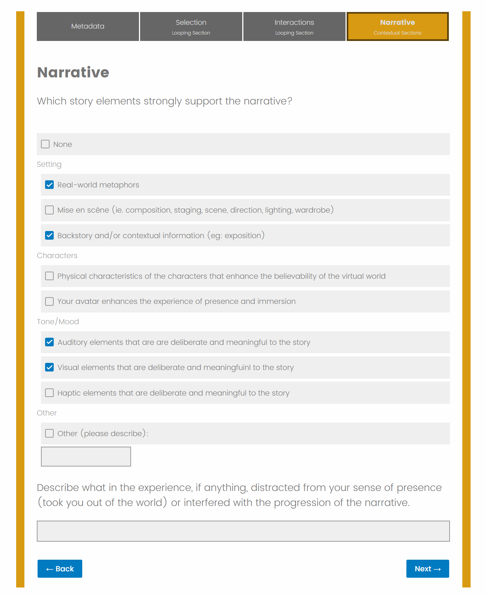
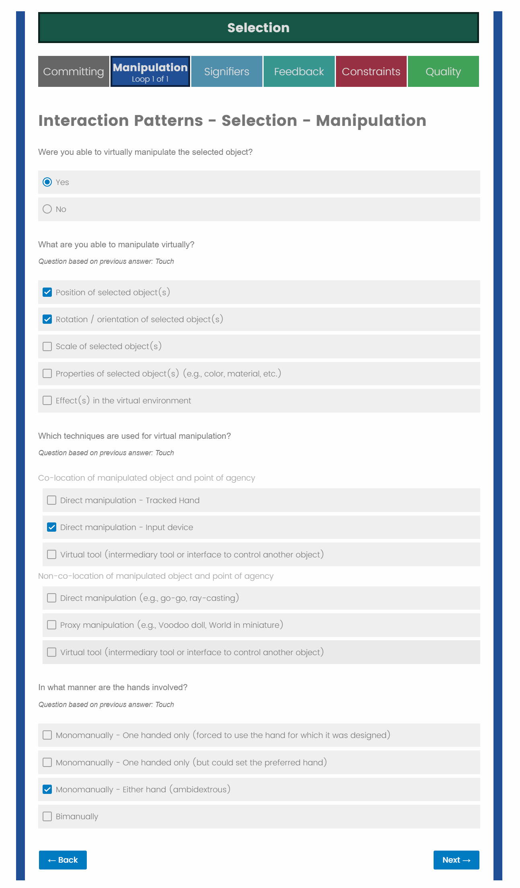

At the heart of our research is the complex, detailed evaluation with logic-based questions that looped depending on prior answers and pushed the limits of Qualtrics. The complex looping allows for many variations of experiences to be quantified in a similar way. It collects qualitative & quantitative data and highlights different attributes of the experience including but not limited to: onboarding, navigation, locomotion, comfort / ergonomics, input (ie. controller mapping), interactions, interfaces, presence, embodiment, response from the system, narrative and inclusivity.
A screenshot of the narrative section, asking about the story elements present in the virtual experience.
A screenshot of the interaction patterns selection, specifically looking at the available manipulations for selection interactions.
Our evaluation aimed to assess congruence between the objective aspects of the VR application and the subjective experience of the user. As numbers by themselves are not enough to evaluate a VR experience, we utilized a methodology that integrated qualitative and quantitative data, with the goals and characteristics of the VR experience.
The analysis focuses on five types of collected data:
The narrative elements and interaction modes generate a subjective perception, which incorporate the dimensions of presence, embodiment, and physiological/affective responses. This subjective perception may or may not be consistent with the aims of the VR app. We assess this consistency to indicate the overall coherence.
In conclusion, the narrative elements (including sounds, animations, etc.) and the interaction methods available (including menus, actions, etc.) should support the story or purpose of the VR application. Cataloging these elements is essential to assess the quality of the user experience. The levels of immersion (including presence and embodiment) and the physical and affective responses of the users will or will not be appropriate in relation to the narrative and interactive elements of the application.